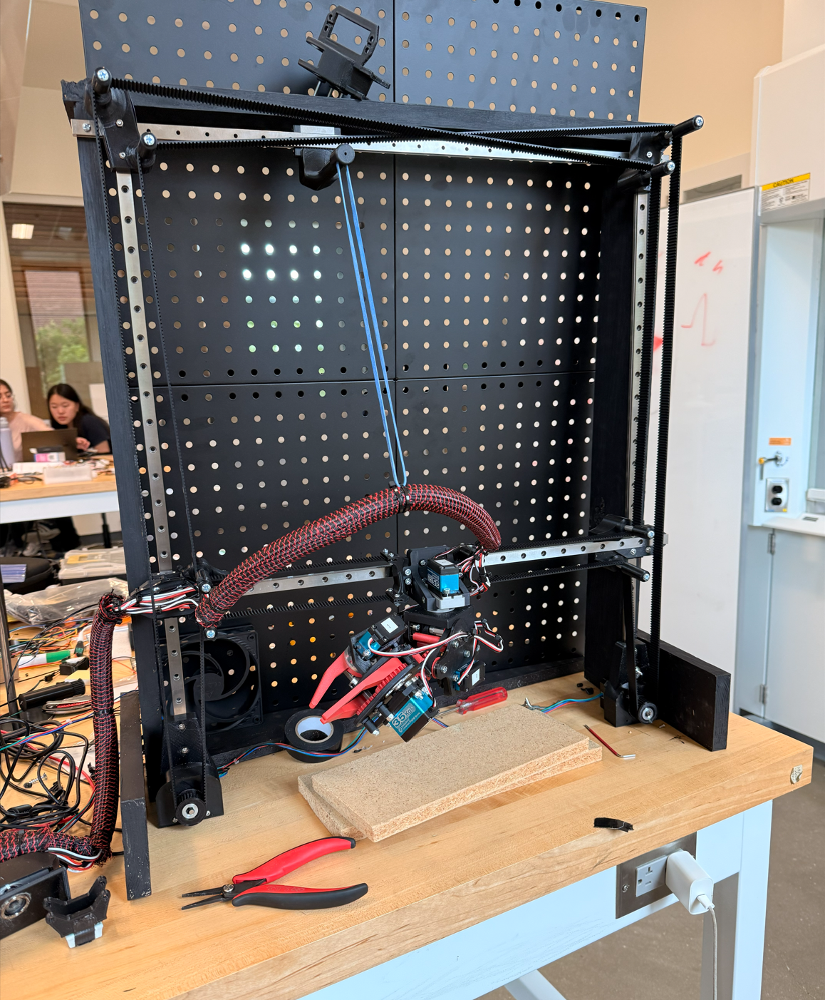
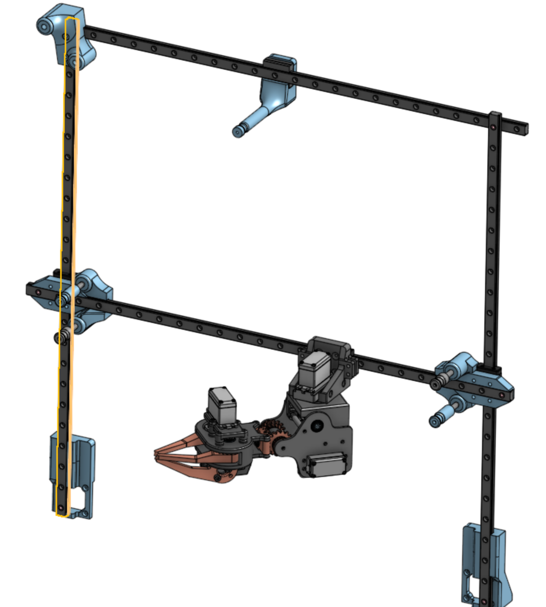

2025 · Automation
JarvisSort
This was an early sorting project focused on moving parts reliably and making the motion repeatable. The goal was to keep the system simple enough to tune quickly and improve without a full redesign.

Build overview
The goal was to sort parts consistently without making the machine fragile or overly complicated. I focused on the motion path, the sensing, and how easy it was to adjust when the process didn’t behave the way I expected.
This was one of my earlier builds, and it taught me a lot about making automation work in a way that is easy to debug and iterate on.
Gallery

Design notes
Components and architecture
The system includes the controller, motors, frame, sorting mechanism, and the sensors needed to detect and route parts reliably.
Design decisions
I focused on repeatability and flow rather than max speed. If the part path was predictable, it was easier to tune and less likely to jam.
Testing and next iteration
The main improvements would be better sensing, smoother part flow, and a system that is easier to adjust when the process changes.